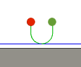

<div id="exit_sameAsEntry"><p>有効にすると、退出値は進入値と同一になります。</p>
<table class="tipTable" cellspacing="10">
<tr>
<td><center></center></td>
<td><center></center></td>
</tr><tr>
<td><center><p><b>進入と同一の退出   </b></p></center></td>
<td><center><p><b>  進入と異なる退出</b></p></center></td>
</tr></table>
<p><b>注:</b> 退出値を変更するにはオフにします</p>
</div>